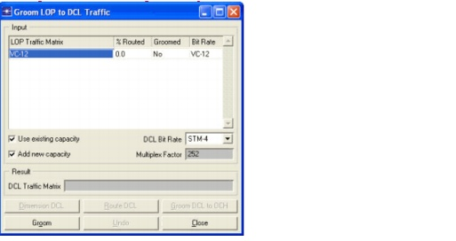
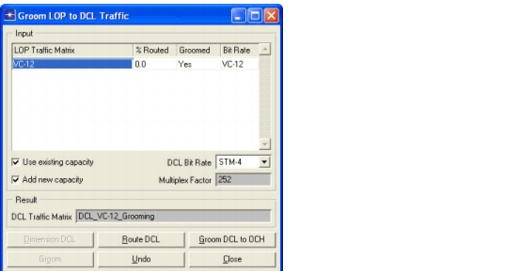
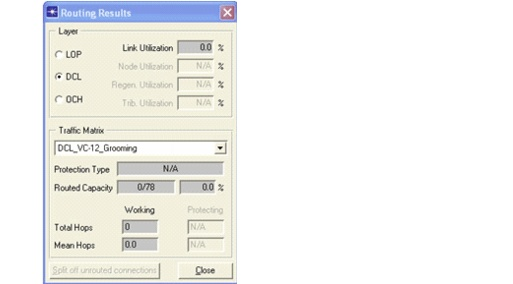
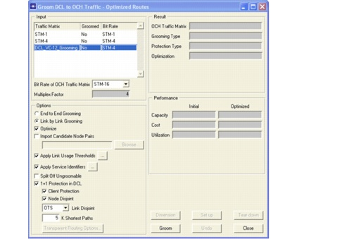
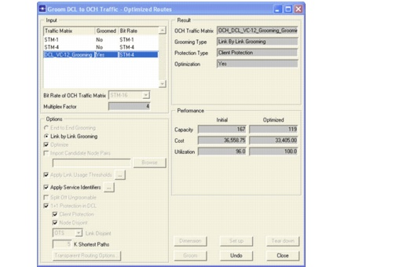
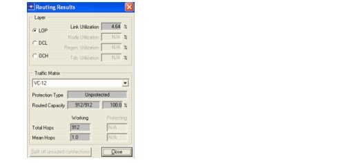
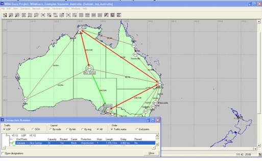
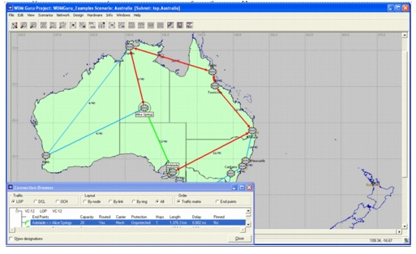

Network Design Operations > Grooming LOP to DCL Traffic
Grooming LOP to DCL Traffic
An analogous relationship as between DCL and OCH traffic (see paragraph 3.5) exists between LOP (Lower Order Path layer) and DCL traffic. Also in this case we can distinguish two approaches. The first approach is the "bottom-up" approach. Firstly, a logical LOP topology is created by accommodating non-native DCL traffic in the network. Secondly, LOP traffic is routed in this logical topology. The other approach is referred to as "top-down" or the "grooming" approach. Here, dimensioning of the LOP layer drives the demand for the DCL layer, which can subsequently be dimensioned. SP Guru Transport Planner supports only one approach to groom LOP to DCL traffic, namely the basic end-to-end grooming approach. This implies that all LOP connections have one-hop routes (only working path) and that no switching is performed in the nodes at the LOP layer.
Procedure 3-7 Grooming LOP to DCL traffic
- Open the WDMGuru_Examples project.
- Select File > Open....
- Select the WDMGuru_Examples project, then press Open.
The example project which contains various scenarios loads. The Australia scenario appears in the workspace.
- Groom the LOP traffic matrix.
- Go to the Design > Groom LOP to DCL Traffic dialog box.
- Select the VC-12 LOP traffic matrix in the traffic matrix table. Select STM-4 as target bit rate in which the DCL traffic matrix will carry the LOP traffic. This results in a multiplex factor of 252 between the LOP signal and the DCL signal.
- Select Use existing capacity, implying the grooming algorithm to use the spare capacity present in the LOP layer to accommodate the LOP traffic. Note that in this example there is no spare capacity in the LOP layer, because no DCL traffic has yet been accommodated in the network. Use the DCL toolbar button to verify this in the DCL layer view before opening the LOP grooming dialog box.
- Select Add new capacity. This implies that the grooming algorithm creates (if needed) a new DCL traffic matrix to host the LOP traffic.

- Press Groom. Close the results dialog box. Note that a new DCL traffic matrix (i.e. DCL_VC-12_Grooming) has been created to host the LOP traffic.

- Close the Grooming LOP to DCL Traffic dialog box.
- Go to Design > Routing Results. Select DCL (Layer) and DCL_VC-12_Grooming (Traffic Matrix). Note that this traffic matrix has 78 connection units, but none of them are yet accommodated in the network (0% routed).

- Close the Routing Results dialog box.
- Groom the DCL traffic matrix (resulting from the LOP grooming action).
- Return to the Design > Groom LOP to DCL Traffic dialog box.
- Press the Groom DCL to OCH button.The Groom DCL to OCH Traffic dialog box appears.
- Select the traffic matrix DCL_VC-12_Grooming and STM-16 as target bit rate (resulting in multiplex factor 4 between the DCL and the OCH traffic)
- Select the following options: Link by Link Grooming, Optimize, 1+1 Protection in DCL, Client Protection, Node Disjoint, and OTS Link Disjoint.

- Press Groom. The Grooming Optimization Progress dialog appears. Once the status is Finished, close this dialog box.
- The grooming algorithm has created a new OCH traffic matrix, OCH_DCL_VC-12_Grooming_Grooming, to host the DCL traffic.

- Close the Grooming Optimization Progress, Groom DCL to OCH Traffic, and Groom LOP to DCL Traffic dialog boxes.
- Go to the Design > Routing Results dialog box.
- Select OCH (Layer) and OCH_DCL_VC-12_Grooming_Grooming (Traffic Matrix). All connection units of this traffic matrix are accommodated in the network (without protection).
- Select DCL as layer and DCL_VC-12_Grooming as traffic matrix. Note that this traffic matrix is entirely accommodated in the network exploiting the 1+1 protection scheme.
- Select the LOP layer and the traffic matrix VC-12. This traffic matrix is entirely accommodated in the network without protection. The link utilization in the LOP layer amounts to 4.64%. Note that the total number of hops amounts to 912 units, which is the same as the number of connection units of the traffic matrix. This could be expected, because each connection is routed along a one-hop path (basic end-to-end grooming approach).

- Close the Routing Results dialog box.
- Inspect the routed connections:
- Go to Network > Connection Browser.
- Select LOP (Traffic), All (Layout) and Traffic Matrix (Order). Expand the VC-12 traffic matrix (using the + icon) and select the connection Adelaide <-> Alice Springs.
- Use the DCL button on the toolbar to view the route of the selected connection in the DCL layer. Note that the connection is protected at the DCL layer level (however, it is not protected at the LOP layer level). The protection path of the connection is switched at the electrical level in the nodes Darwin and Brisbane.

- Click on the OCH toolbar button. The route of the selected connection is now displayed in the OCH layer. Note that the protection path of the connection is switched at the optical level in the nodes Cairns and Townsville.

- Close the project.
End of Procedure 3-7
| Home © 1987-2007 OPNET Technologies, Inc. All Rights Reserved. This software may be covered by one or more U.S. Patents. See complete patent notice in the Legal Notices section. OPNET Support Center |